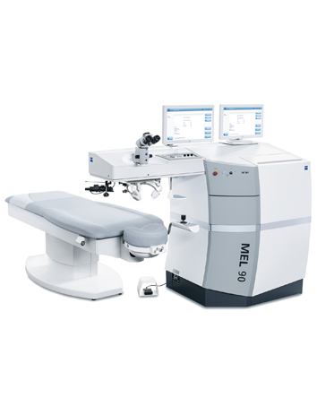

에스안과는 최신의 수술장비와 검사장비를 구비하여 보다
안전한 결과를 위해 항상 최선을 다하고 있습니다.
세밀함과 섬세함의 절/대/강/자
EX500 White
NEW EX500 White는 다양한 검사장비와의 결합으로 일반
근시, 난시뿐만 아니라 불규칙 각막에 가장 세밀하게 개별
맞춤수술이 가능합니다.
그리고 수술이 가능한 범위도 매우 넓이 때문에
초고도근시,
초고도난시도 안전하게 수술
이 가능합니다.
최소절삭 레이저 고도근시에 적화
Triple A MEL90

에스안과에서는 안전을 최우선으로 기반해 시력교정의 장비
역시 안전함을 최우선으로 선택합니다.
MEL90은 현존하는 가장 빠르고 안전한 레이저로
최소절삭/
최고속도/듀얼레이저 맞춤교정이 가능
합니다.
Triple MEL90으로
더욱 안전한 시력 교정술이
가능합니다.
01. 최소절삭
Advanced Ablation
각막절삭량 최소화로 고도근시도
안전한 수술이 가능
02. 듀얼레이저 맞춤교정
Altemative Frequency
최적의 맞춤 시술 가능
(250/500Hz)
03. 최고속도
Accelerated Speed
가장 빠른 속도 (1.3sec/D)로
수술시간 단축
에스안과 아벨리노 DNA 검사
아벨리노 각막이상증은 눈의 각막에 이상단백질이
침착되어 흰 반점이 생겨 결국은 실명에 이를수있는
유전질환입니다.
아벨리노 각막이상증은 보통 염색체 우성유전을 하는 유전
질환으로서 부모 중 한 사람이 연관된 유전자 돌연변이를 보유
하고 있다면, 다음 세대의 50%가 동일한 질환 관련 돌연변이
를 가지게 됩니다.
현재 아벨리노 각막이상증 유병률에 대한 연구결과에 따르면,
국내 870명당 한 명꼴로 환자가 있을 것으로 추정되고 있습
니다.
시력교정술 전 아벨리노 DNA검사,
꼭 받아야 하나요?
시력교정술을 고려하고 있다면, 수술 전 반드시
아벨리노 DNA검사를 권유합니다.
아벨리노 유전자를 보유하고 있는 환자가 시력교정술을
받게 될 경우 각막에 자극을 받아 단백질이 비정상적으로
초과 생산되면서 시력 저하를 유발합니다. 현대인의 평균
수명이 증가하면서 삶의 질을 높이는 것이 매우 중요해졌
으며, 이로 인해 시력교정술을 고려하는 환자뿐만 아니라
소중한 눈을 보호하기 위해 아벨리노 DNA 검사를 받는
환자들이 증가하고 있습니다.
에스안과 365 멸균 시스템
진료에서 가장 중요한 기본 요소는 감염관리입니다.
본원은 최적의 환경에서 편안하게 검사·수술을 받을 수 있도록
멸균 시스템을 운영합니다.
UPS 무정전 전원공급장치
정전 등 천재지변의 상황이 발생해도 전원을 안전하게
공급할 수 있는 장치입니다.
365일 항온항습
수술을하는 장비는 습도, 온도 변화에 매우 민감하며 이는 곧
수술 안전문제로 직결됩니다. 에스안과 수술실은 수술에 가장
적합한 온도인 섭씨 20도와 최적습도 40%를 1년 365일
하루 24시간 일정하게 유지합니다.
완벽한 멸균관리
수술실은 항상 완벽한 멸균관리를 진행하고 청결하게
관리합니다.
개인 소독 및 복장
수술실 근무 의료진은 개인 소독 및 복장을 완벽히 한
상태에서 근무에 임합니다.
에스안과는 철저한 수술실 시스템으로 안전을 우선시 합니다.
에스안과 안전관리시스템
에스안과의 수술실 근무 의료진은 개인 소독 및 복장을
완벽히 한 상태에서 근무에 임합니다. 에스안과는
환자의 안전을
위해서라면 그 어떤것과도 타협하지 않겠습니다.
완벽을 추구하는 수술실 시스템
대학병원급 최첨단 검사 장비를 통한 상세정밀진단
수술 경험이 풍부한 전문 의료진
인공수정체 삽입술 15,000례 달성
수술경험으로 말하는 안산에스안과
시력교정수술 Q&A
시력교정술에 대해 자주 하는 질문 FAQ
라식라섹 수술하고 언제부터 일상생활 가능한가요?
수술 다음날부터 가능합니다. 수술 경과를 관찰하기 위해 라식은
수술한 다음날부터 진료가 있습니다. 진료를 본 후 특이사항이
없다면 세안, 머리 감기, 외출 등 일상적인 활동이 가능 합니다.
또, 여성들은 피부 화장 뿐 아니라 눈화장도 다음날 진료 후 가능
합니다.
시력교정술이 가능한 나이가 어떻게 되나요?
만 18세 이상으로 최근 6개월 간 시력변화가 없는 경우에 수술이
가능합니다. 수술 전 정밀검사와 진료를 통해 수술 가능 여부가
결정될 수 있습니다.
시력교정술 후 자외선 차단은 꼭 해야하나요?
강한 자외선은 수술과 관계없이 눈에는 좋지 않습니다. 안정적인
수술 결과를 위해 모든 수술 이후 6개월 간 자외선차단을 안내
드리고 있습니다. 특히 라섹의 경우 수술 후 자외선 노출이 각막
혼탁을 유발할 수 있기 때문에 각별한 주의가 필요합니다.
아벨리노 검사는 꼭 받아야 하는 검사인가요?
아벨리노 유전자를 가지고 계신 분이 수술을 하셨을 경우, 크게는
실명까지 될 수 있는 부분입니다. DNA검사(구상상피검사)를
통해 정확한 아벨리노 유무를 판단 할 수 있습니다. 의무적인
검사는 아니나 환자분의 안전하고 정확한 수술 결과를 위해서
본원에서는 아벨리노 검사를 권유 드리고 있습니다. 특히,
만 20세 이전(수능시험 이후~대학교 1학년)은 아벨리노가 각막에
나타나지 않는 시기이므로 반드시 검사 하기를 권유합니다.
안구건조증이 있어도 시력교정수술을 받는데 지장이
없나요?
시력교정수술을 원하는 사람 중 안구건조증으로 더 이상 콘택트
렌즈 착용이 힘든 사람들이 많습니다. 중요한 것은 수술 전에
안구건조증을 치료해야 한다는 것입니다. 보통 인공누액을
점안하거나 녹는 실리콘으로 만든 플러그로 눈물 배출구를 막아
눈물이 없어지는 것을 지연시켜 눈을 촉촉하게 합니다. 시력교정
수술 후에는 안구건조증 증상이 일시적으로 좀 더 심해지기도
하는데, 그건 수술을 받는 동안 각막의 지각 신경현상은 일시적
이며 보통 3-6개월 이상 지속되지는 않습니다.안구건조증은
컴퓨터를 자주 하거나, 장시간 독서를 하거나 혹은 장시간 운전을
하면 심해집니다. 또한 눈을 깜빡이지 않고 오랫동안 응시해야
할 필요가 있는 작업은 할 때도 심해집니다. 따라서 수술 후 몇
달은 인공누액을 계속 점안하는 것이 중요합니다.
시력교정수술을 못하는 경우도 있나요?
각막이 도수에 비해 지나치게 얇거나, 어두운 곳에서 동공 크기가
정상보다 큰 경우 등 수술 전 정밀 검사를 통해 도수, 각막 두께,
동공 크기 등을 측정하여 수술 할 수 있는 가이드 라인을 잘 지킬
수 있을 때에만 가능합니다. 또한 각막에 심한 흉터가 있거나
원추 각막인 경우에도 수술 대상에서 제외되며 녹내장, 백내장,
망막 이상 등의 안구 질환이 있는지도 사전 검사를 통해 시행해야
안전한 라식 수술이 됩니다.
에스안과 라식 라섹의 우수성
라식,라섹 수술에 있어 가장 자랑스럽게
생각하는 부분은 의사의 수술 경험
입니다.
각막 두께가 두껍다고 라식수술하던 시대는 지났습니다. 더욱
철저하고 까다롭게 검사하고 수술 적합 여부를 확인합니다.